服务音视频 Live、视频电话等多模态场景，对众包标注数据进行质检验收，识别错误、争议和边界样本，并将 bad case 整理为上游可执行的反馈。
音视频场景标注质检规则拉齐bad case数据交付
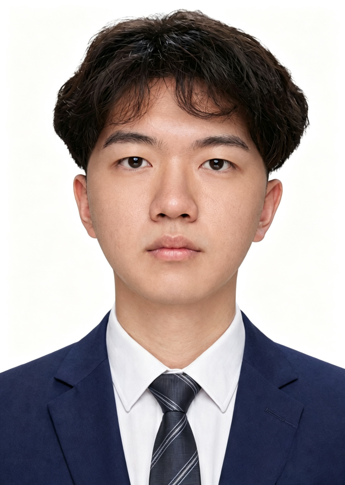
从真实工作流程出发，把重复问题拆成工具、流程和可复用方案。
项目不是孤立的兴趣展示，而是从工作场景里长出来的能力证据。点击时间线，展开每段经历的职责、方法和结果。
先在内容运营中理解分类、标签和用户兴趣，再进入多模态数据链路，开始处理模型质量、标注规则和数据交付。
服务音视频 Live、视频电话等多模态场景，对众包标注数据进行质检验收，识别错误、争议和边界样本，并将 bad case 整理为上游可执行的反馈。
负责 J-Pop、ACG、摇滚、粤语、运动等垂类的内容运营与标签治理，参与歌单、Banner、榜单、搜索词、曲库标签和模型训练数据建设。
参与项目前期资料整理、基础分析、方案文本和汇报材料制作，建立了从复杂信息中提炼结构、组织材料和交付成果的基础能力。
把个人能力从形容词变成可以被观察的动作：发现、拆解、搭建、反馈。
除了工作经历和项目，还有 Prompt、PRD、Mockup、SOP 和工具界面，记录你是如何把想法落下来的。
观察：人工播放音频、逐句听写、反复核对
问题：多语种与方言场景耗时，隐私数据不宜上传
方案：本地部署 · 多引擎切换 · 统一输出
沉淀：Qwen3 / Whisper / FunASR / UniASR / MMS
→ 一套工具，多引擎切换；数据不出本机。
主项目服务于目标岗位，支撑项目展示你的跨场景产品能力。它们不再被当成同等重量的卡片。
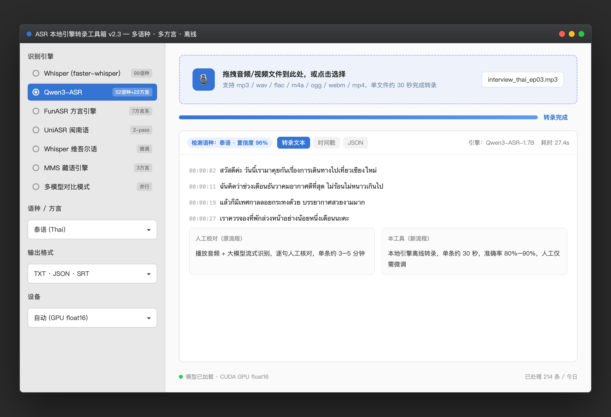
面向多语种、多方言和隐私敏感场景的离线转录工具，支持多引擎对比和多种输出格式。
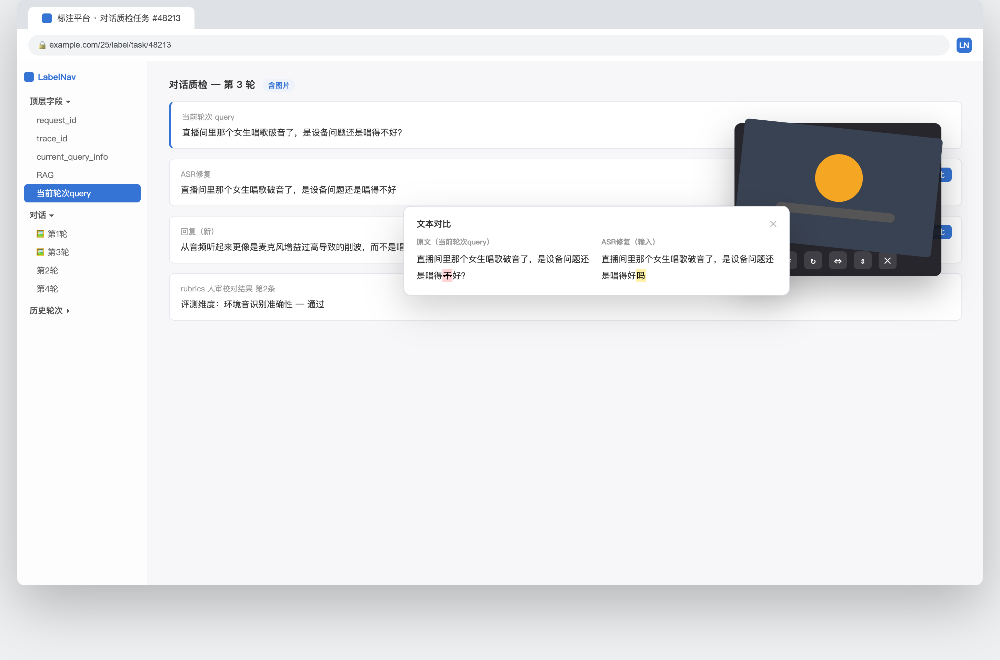
针对标注、质检中的查找、图片查看和文本比对痛点，做成可复用的浏览器效率工具。
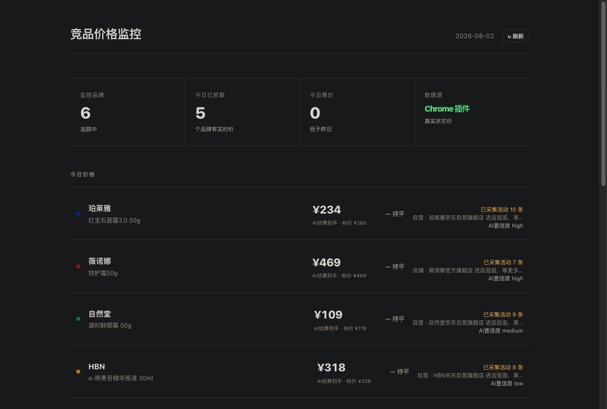
从真实商品页面采集数据，经 AI 解析后在监控中心呈现价格、活动、赠品和置信度。
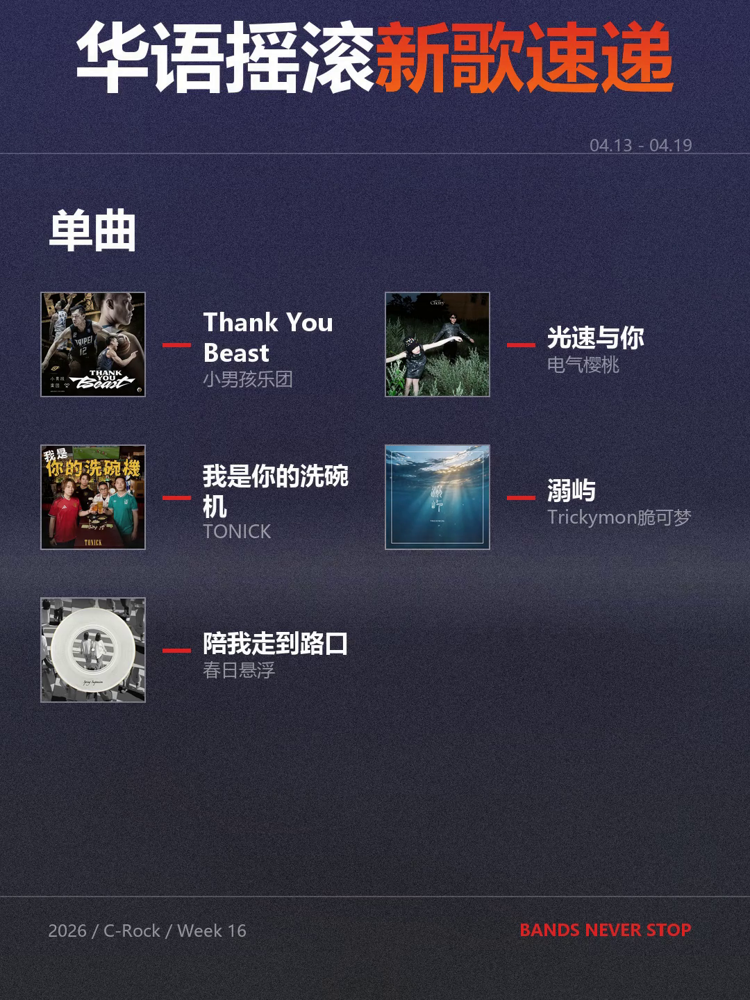
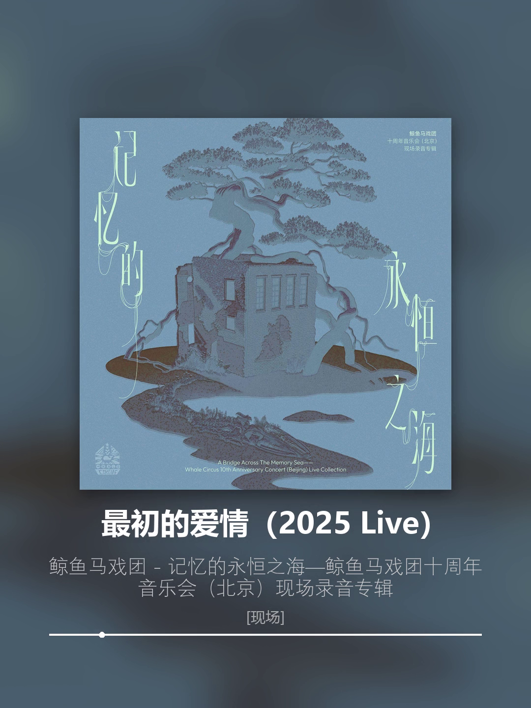
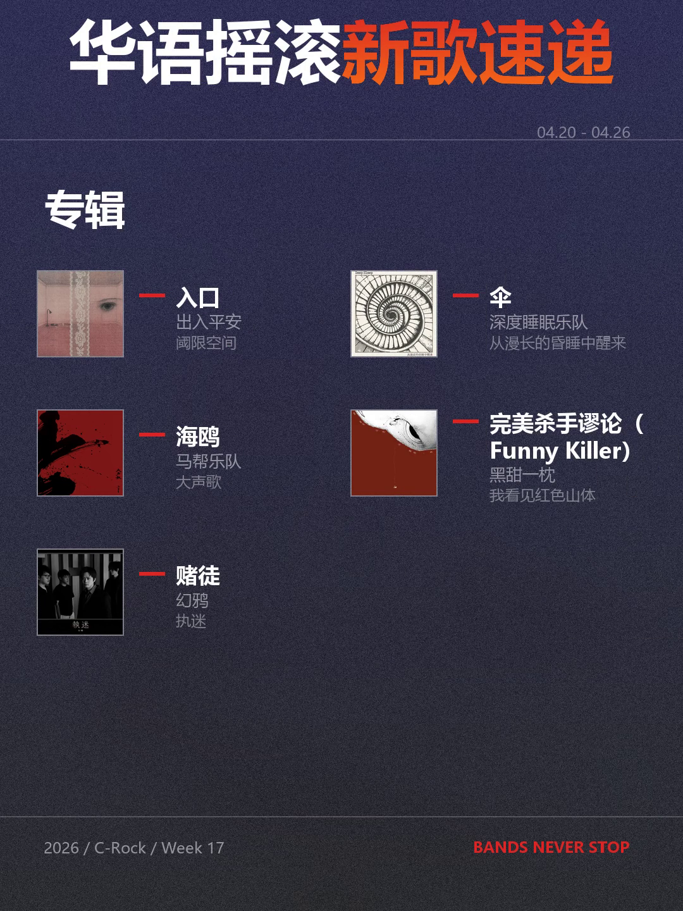
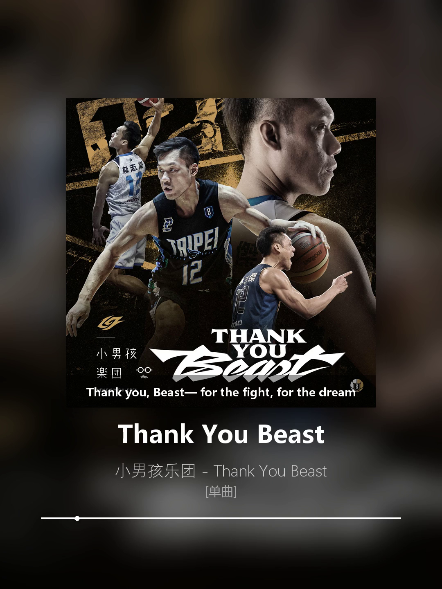
把歌单抓取、AI 乐评、视觉编辑、字幕和视频渲染串成自动化内容生产流程。
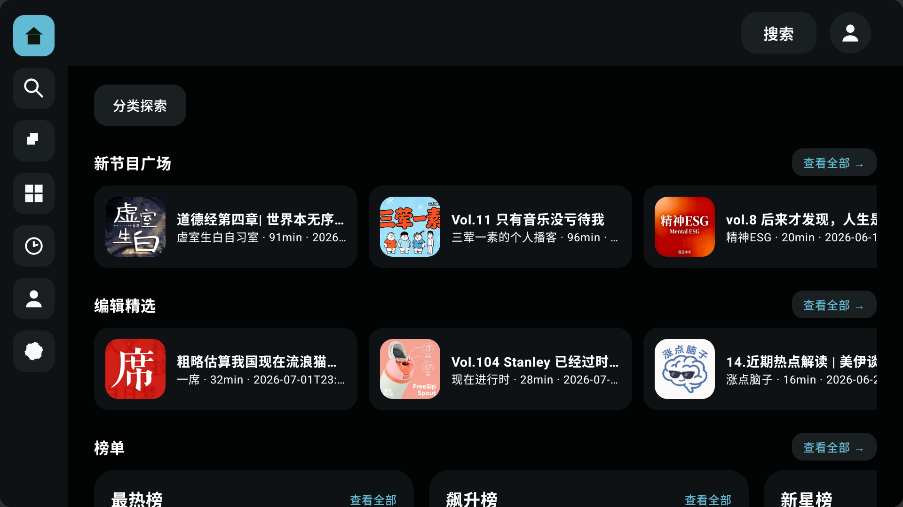
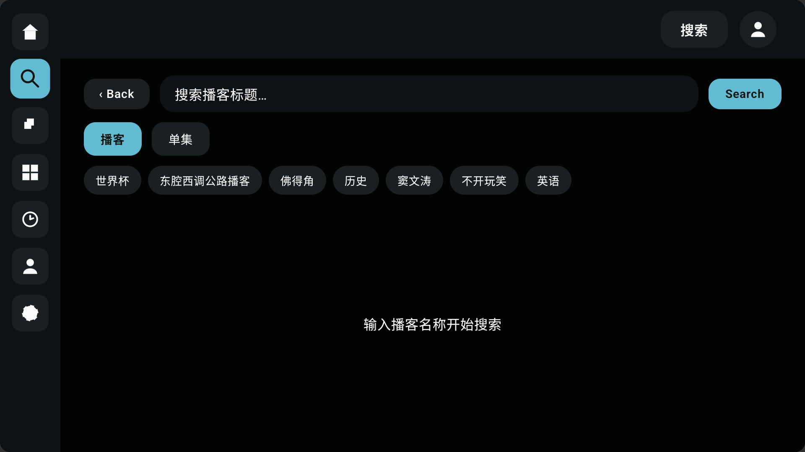
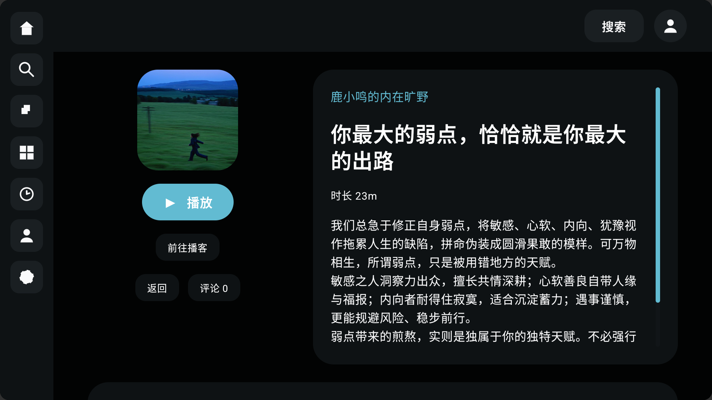
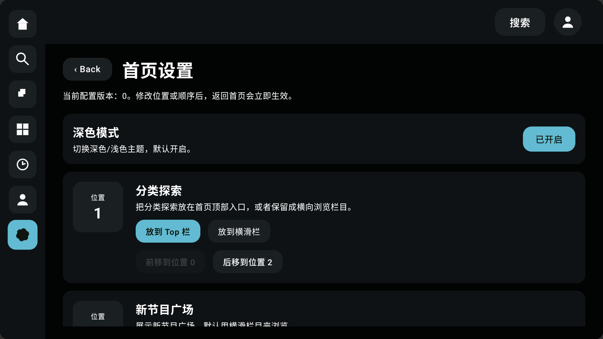
面向 Android TV 的播客客户端，独立完成信息架构、大屏布局、遥控器交互和完整功能链路。
希望参与 AI 工具搭建、数据流程优化、对话场景设计和模型质量反馈等工作。